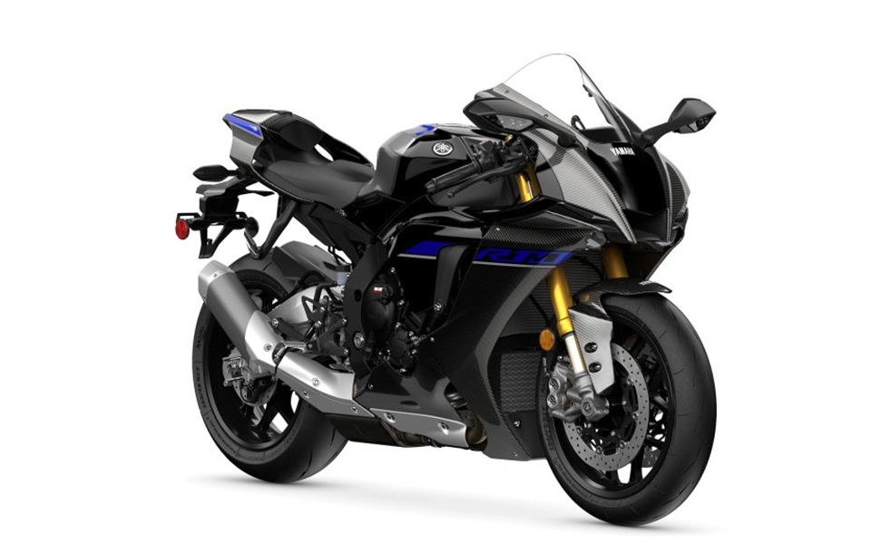

YZF-R1M
Yamaha ha creado la R1M de competición utilizando algunas de las tecnologías más sofisticadas desarrolladas a partir de la ganadora M1 de MotoGP. Su suspensión electrónica de competición (ERS) Öhlins de última generación, que incluye horquilla delantera de gas anticavitación NPX, te brinda el mejor rendimiento en cada circuito, mientras que la carrocería de fibra de carbono de frontal rebajado te ayuda a reducir los tiempos por vuelta. Pero el verdadero factor de diferenciación de la R1M son sus ayudas al conductor de alta tecnología, que incluyen control de frenado, administración de freno motor y control de salida, además de una unidad de control de comunicaciones para el registro de datos y ajuste inalámbrico del motor.